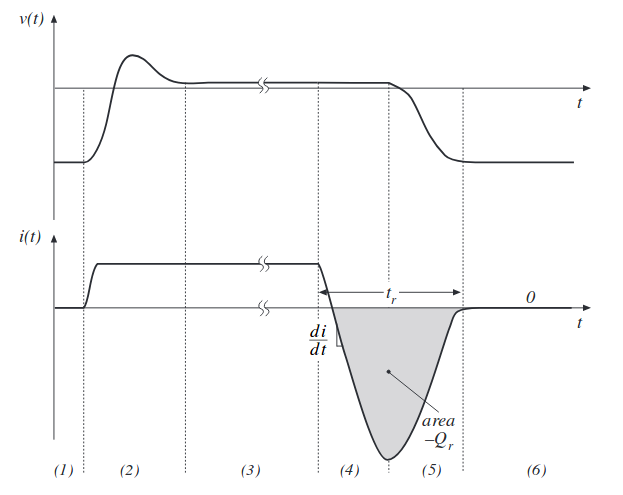
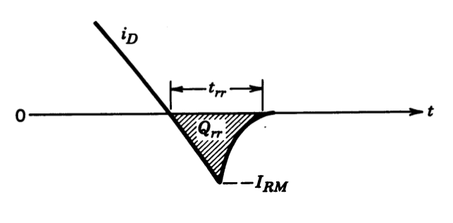

class: center, middle # EE-463 STATIC POWER CONVERSION-I # Power Semiconductor Devices ## Ozan Keysan ## [keysan.me](http://keysan.me) ### Office: C-113 <span class="meta">•</span> Tel: 210 7586 --- # Diode <img src="https://www.servocity.com/media/catalog/product/cache/1/image/9df78eab33525d08d6e5fb8d27136e95/6/0/605126_diodes_1500px.jpg" alt="Drawing" style="width: 600px;"/> --- # Power Diode (>50 A) <img src="https://5.imimg.com/data5/TQ/GS/MY-1177100/diode-250x250.jpg" alt="Drawing" style="width: 400px;"/> --- # Ideal Diode <img src="https://www.elprocus.com/wp-content/uploads/2016/08/Ideal-Diode.jpg" alt="Drawing" style="width: 800px;"/> --- # Ideal Diode ## V-I Characteristics <img src="https://www.electrical4u.com/images/2017/march/1488428722.PNG" alt="Drawing" style="width: 500px;"/> --- # Practical Diode ## Important Parameters -- - ## Forward Voltage -- - ## Reverse Break-down Voltage -- - ## On-resistance -- - ## Turn-on, turn-off times (forward, reverse-recovery) --- # Practical Diode: V-I Characteristics <img src="https://www.learningaboutelectronics.com/images/Diode-characteristics-curve.png" alt="Drawing" style="width: 500px;"/> --- # A few Data-sheets --- # Diode Switching Waveforms  ###Exaggerated view --- # Diode Switching Waveforms ## Turn-off transient --- # Reverse Recovery --  ### Reverse current is required to remove carrier charges -- # Reverse Recovery --- # Losses -- # Conduction Losses -- - ## Increases with current -- ## Switching Losses -- - ## Increases with turn-on, turn-off-time -- - ## Increases with switching frequency --- # Switching Losses ## Linearized <img src="./images/ee463/diode_switching_loss.png" alt="Drawing" style="width: 500px;"/> --- # Thyristor <img src="https://upload.wikimedia.org/wikipedia/commons/thumb/9/93/Thyristor_circuit_symbol.svg/600px-Thyristor_circuit_symbol.svg.png" alt="Drawing" style="width: 600px;"/> --- # Thyristor <img src="https://upload.wikimedia.org/wikipedia/commons/thumb/c/c5/Thyristor.svg/800px-Thyristor.svg.png" alt="Drawing" style="width: 800px;"/> -- ## Four layer PNPN semiconductor (and two-transistor equivalent circuit) -- ## A diode you can delay on-state with gate signal(pulse) -- ## but no control while turning-off --- # Thyristor <img src="https://www.radios-tv.co.uk/wp-content/uploads/2016/04/thyristor1.jpg" alt="Drawing" style="width: 600px;"/> --- # Thyristor <img src="https://cdn3.volusion.com/jjraz.uhwvm/v/vspfiles/photos/MCC95-12IO8B-2.jpg?1450700625" alt="Drawing" style="width: 600px;"/> --- # Thyrsitor -- - ### Has the highest current and voltage rating among other devices -- - ### Slow switching device (eg compared to MOSFET) -- - ### Latching switch (can be turned on by Ig, but cannot be turned off) --- # Thyristor ## V-I Characteristics - ### Reverse Blocking - ### Forward Blocking - ### Forward Conducting --- # Thyristor ## V-I Characteristics <img src="https://upload.wikimedia.org/wikipedia/commons/thumb/f/f1/Thyristor_I-V_diagram.svg/1280px-Thyristor_I-V_diagram.svg.png" alt="Drawing" style="width: 700px;"/> --- # Thyristor ## V-I Characteristics <img src="http://www.circuitstoday.com/wp-content/uploads/2009/09/SCR-Voltage-Current-Characteristics.jpg" alt="Drawing" style="width: 700px;"/> --- # Types of Thyristors -- - ## SCR (Silicon Controlled Rectifier) -- - ## TRIAC, DIAC -- - ## GTO (Gate Turn-Off Tyhristor) --- # GTOs <img src="http://www.electronicshub.org/wp-content/uploads/2015/05/GTO-Symbols.jpg" alt="Drawing" style="width: 700px;"/> --- # GTOs <img src="https://www.dynexsemi.com/assets/images/common/_landscape_med/DSC_8196.jpg" alt="Drawing" style="width: 700px;"/> - ## Used at very [high power levels](https://www.dynexsemi.com/products/semiconductors/gate-turn-off-thyristors) --- # GTOs - ## Fully contrallable switch - ## Can be turned-on and turned-off - ## Turn-on achieved by positive current pulse - ## Turn-off achieved by negative current pulse --- # Types of Thyristors ## TRIAC - ## Bi-directional device - ## TRIACs can be triggered by positive or negative current --- # MOSFET --- # IGBT ## 3-Phase Half Wave Rectifier -- ### N-Phase Generalized Form -- <img src="./images/ee463/n_phase_half_bridge.png" alt="Drawing" style="width: 600px;"/> --- ## 3-Phase Half Wave Rectifier ## Voltage Waveforms <img src="./images/ee463/3ph_half_bridge_voltage.png" alt="Drawing" style="width: 600px;"/> --- ## 3-Phase Half Wave Rectifier ## Average Voltage? -- ## \\(V\_{dc}= \dfrac{3\sqrt{6}}{2 \pi} V\_{rms}\\) -- ### Comparison with the single phase rectifier? --- ## 3-Phase Full Wave (Bridge) Rectifier <img src="http://2.bp.blogspot.com/-cumirN3mjC0/UiVln-LDtTI/AAAAAAAAALw/f9hwfKSzZb0/s640/3-Phase-Bridge-Rectifier1.jpg" alt="Drawing" style="width: 600px;"/> --- ## 3-Phase Full Wave (Bridge) Rectifier -- <img src="./images/ee463/3ph_full_bridge.png" alt="Drawing" style="width: 700px;"/> --- ## 3-Phase Full Wave (Bridge) Rectifier ### Ignore Ls and redraw -- <img src="./images/ee463/3ph_full_bridge2.png" alt="Drawing" style="width: 500px;"/> --- ## 3-Phase Full Wave (Bridge) Rectifier ### Can you draw the voltage and current waveforms? -- <img src="./images/ee463/3ph_diode_voltage.png" alt="Drawing" style="width: 800px;"/> --- ## 3-Phase Full Wave (Bridge) Rectifier ### Can you draw the voltage and current waveforms? <img src="./images/ee463/3ph_diode_voltage2.png" alt="Drawing" style="width: 800px;"/> --- ## 3-Phase Full Wave (Bridge) Rectifier ## Average voltage? -- ## \\(V\_{dc}= \dfrac{3\sqrt{6}}{ \pi} V\_{ph}\\) ### or -- ## \\(V\_{dc}= \dfrac{3\sqrt{2}}{ \pi} V\_{l-l} = 1.35 V\_{l-l}\\) ### =540 Vdc for a 400 V grid --- ## What about the current waveforms? -- <img src="./images/ee463/3ph_diode_current.png" alt="Drawing" style="width: 800px;"/> --- ## What about the current waveforms? ### What are the differences wrt single phase? -- <img src="./images/ee463/3ph_diode_current2.png" alt="Drawing" style="width: 800px;"/> ## No 3rd order harmonics! --- # Comparison of Rectifiers --- # Commutation -- <img src="./images/ee463/3ph_commutation1.png" alt="Drawing" style="width: 700px;"/> --- # Commutation -- <img src="./images/ee463/3ph_commutation2.png" alt="Drawing" style="width: 800px;"/> --- # Average Voltage ## Without Commutation ## \\(V\_{dc}= \dfrac{3\sqrt{2}}{ \pi} V\_{l-l} = 1.35 V\_{l-l}\\) -- ## With Commutation ## \\(V\_{dc}= \dfrac{3\sqrt{2}}{ \pi} V\_{l-l} - \dfrac{3}{\pi}\omega L_s I_d\\) ### [MultiSim Simulation](https://www.multisim.com/discover/) --- ## You can download this presentation from: [keysan.me/ee463](http://keysan.me/ee463)